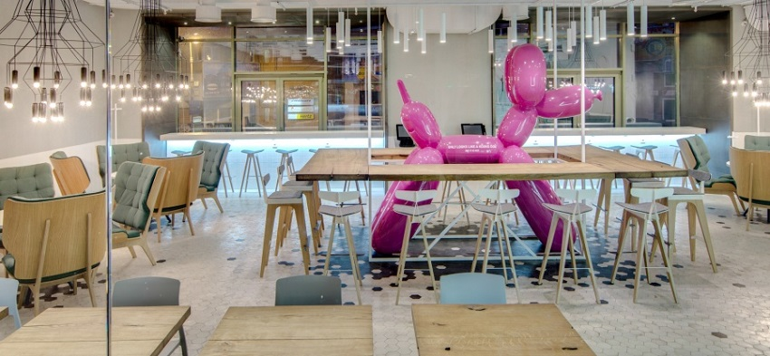
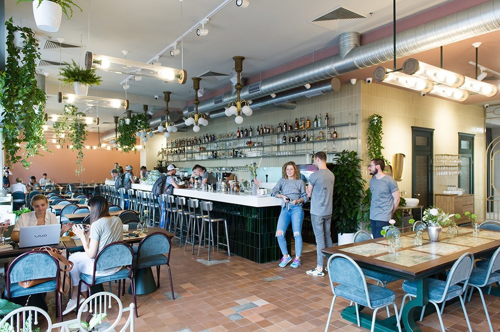
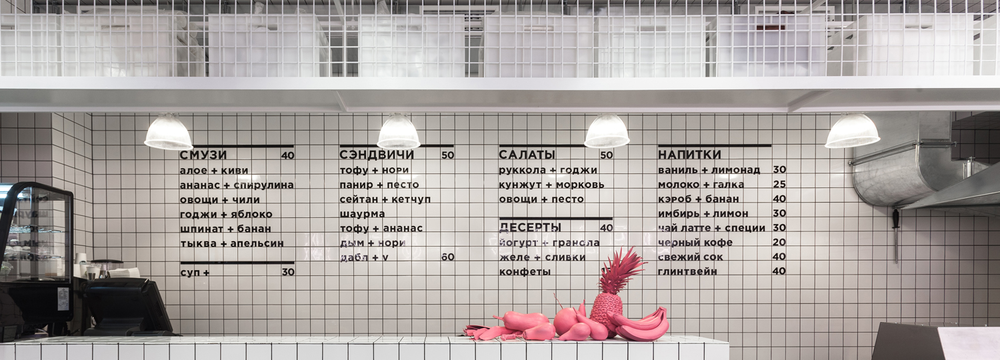
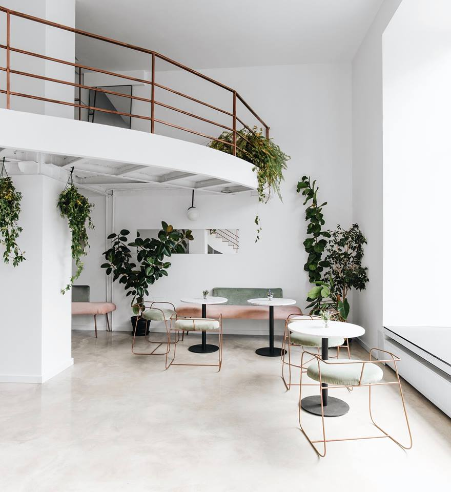
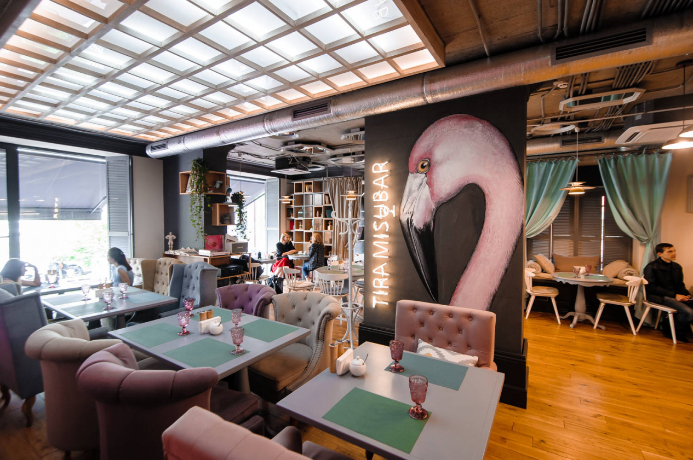
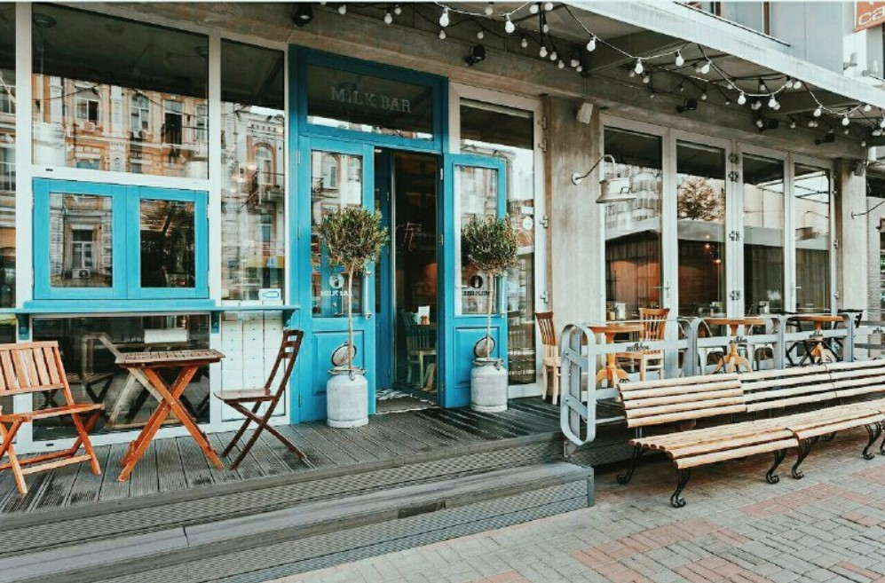

Самые фотогеничные Кафе в Киеве, которые соберут много лайков в вашем Instagram
Виктория Линарес
3/05/19 5:30 pm

1. The cake - Название говорит само за себя. Великолепно фотогеиничные дессерты. И довольно обширное место для сьемок. Можно выбрать локацию на свой вкус. В заведении много ручной работы, дерева, скандинавские люстры и главное место это огромная собака якобы сделаная из шара.

2. Cafe Select Eatery - В кафе интересная кухня и концепция. Хотите попробовать что то американское или вегетарианское ? вам сюда. В интерьере присутвуют несовместимые вещи, много зелени и старых ламп. Если ваш профиль нежный и светлый вам абсолютно точно подойдет это кафе.

3. Orang+utan - Это кафе довольно особенное. В основном тут только сэндвини и здоровая еда. Все для инстаграмма вегетарианца. Еду так же можно взять на вынос и уверяю фото получаться так же многообещающими. Идеально подходит для тех кто ведет инстаграмм в стиле старых фотографий на пленочный фотоаппарат.

4. Kachorovska Store & Café - Белые стены, светлое помещение, минимализм в украшении блюд и мраморные столы… Заманчиво? Тогда бегом в Kachorovska store& café. Кстате говоря кто из Одессы, тот тоже может посетить это место на Бунина. Так как интерьер в одном стиле фото получаться просто шикарно дорогими.

5. Tiramisu bar - Название кричит о несовместимости. Бар и итальянский тирамису.Главной достопримечательностью кафе является большой розовый фламинго. Интерьер выполнен в разных цветах и фактурах. С одной стороны розовая стена, с другой уже черная с зеленью. Так же большой неоновый фламинго. Глаза так и разбегаются, чтобы сделать фото. Выбирайте разные наряды и делайте фото в одном месте, вы с экономите время, и никто даже не догадается что фото были сделаны в один день и одном месте.

6. Milk Bar - одно из первых мест в списке самых информативных кафе Киева. Почти не осталось никого, кто бы не сфотографировал небесно-голубую еду на вынос и двери места встречи. Еда не менее привлекательна: печенье в металлических коробках, молочные коктейли в стеклянных бутылках.

7. Madame Josy - Франция в столице Украины. Интерьер с серых и постельных тонах , лаванда в горшках и деревяные светлые столы. Все что нужно для нежного инстаграмма.
Теперь надень свой лучший наряд, возьми свой телефон и позволь фотосессии начаться!